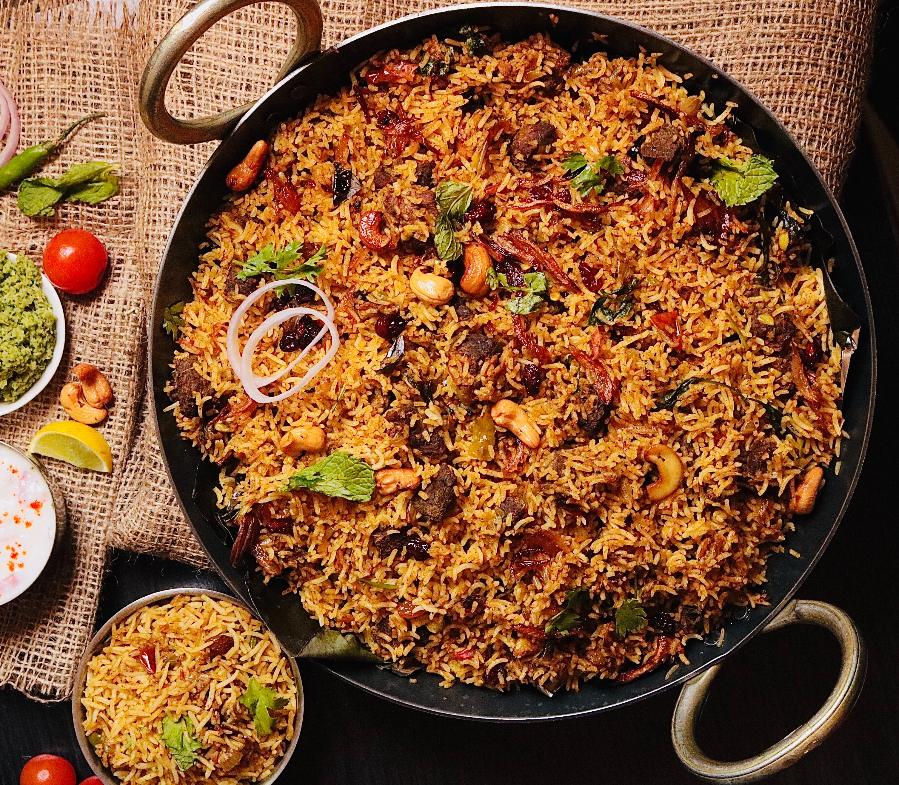
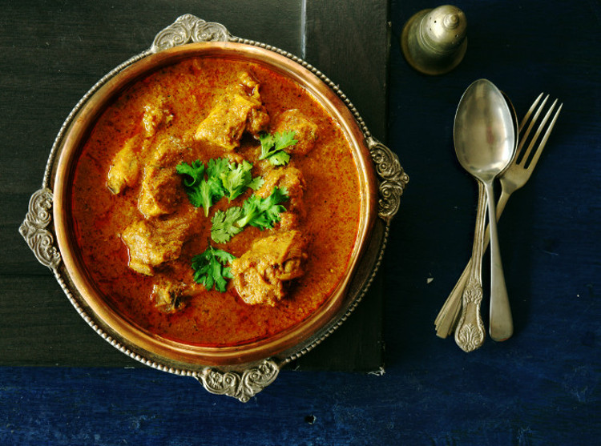
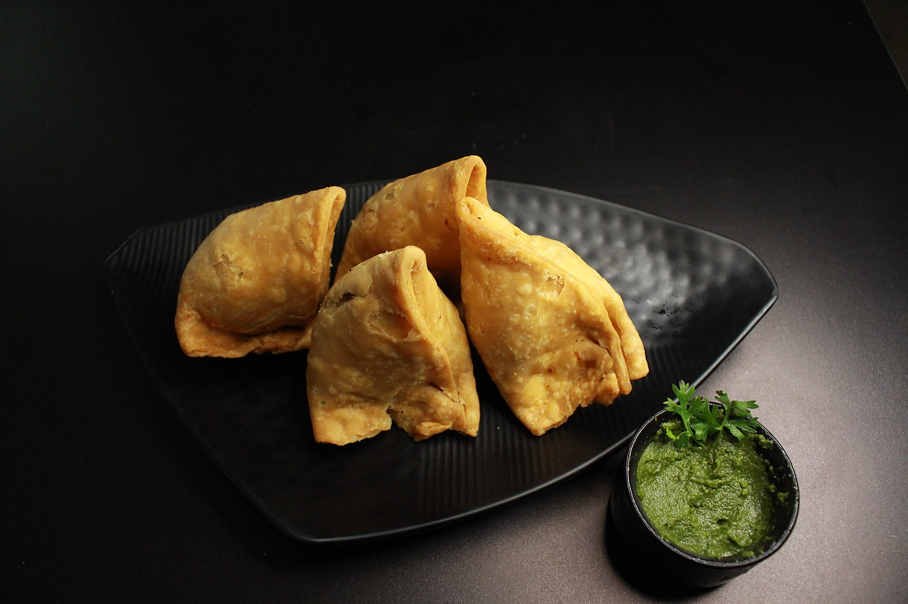

"The best mo mo you'll ever have"
Ingredients:
- 4 cups of all-purpose flour
- 20 gram mince chicken(we used boneless chicken thigh)
- 1 cup chopped fresh cilantro
- 1 cup chopped onion
- 4 tablespoons minced peeled ginger
- 4 tablespoon minced garlic
- 2 tablespoon ground cumin
- 1 teaspoon ground cinnamon
- Salt and black pepper
- Nonstick cooking spray
Instructions
- Mix together the flour and 1 and 1/2 cups room temperature water in a bowl. Kned the dough well until it is medium-firm and flexible. Cover and let rest for 1 hour.
- Meanwhile, mix together the chicken, cilantro, onions, garlic, cumin, cinnamon,2 tablespoons salt and 1/2 teaspoons pepper in a bowl
- To make the wrappers:Break off 1/2 ounce of dough and forming it into a ball. Place the ball on a flat surface and roll it into a 4-inch round with a rolling pin. Repeat with the remaining dough.
- Spray a streamer pan with cooking spray.
- Place a tablespoon of the chicken filling in the middle of a wrapper. Holding the wrapper in your left hand. User your right thumb and index finger to start pinching the edges of the wrapper together. Pinch and fold until the edges of circle close up like little satchel. Place the momo in the prepared steamer pan. Repeat with remaining wrappers and filling.
- Fill the steamer pot halfway with water and bring to a boil. Set steamer pan with momos on tht top of the pot and cover with tight lid. Steam the momos until cooked, 8-10 minutes.
Steamed or fried, the filled, flavorful delicacies are staple of Nepali cuisine with fast-growing following in the U.S and internationally. Nepali chicken momos are my favorite recipe because they are so easy to make and they just taste great. I love how the chicken momo always look so pretty when they're finished.
Check out this site for more free recipes.


